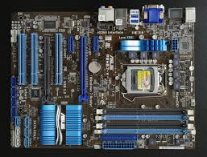

Die Hauptplatine (englisch mainboard, auch motherboard) ist die zentrale Platine eines Computers. Auf ihr sind die einzelnen Bauteile wie Hauptprozessor (CPU), Speicher, der BIOS-Chip mit der integrierten Firmware, Schnittstellen-Bausteine und Steckplätze für Erweiterungskarten montiert; die dafür notwendigen Leiterbahnen sind auf mehrere Lagen (Layer) aufgeteilt.
